开合跳
开合跳：跳起来双腿打开手高举过头顶，然后返回到双脚并拢和手臂放在身体两侧的位置，这项运动锻炼了身体大部分肌肉。
膝盖俯卧撑
膝盖俯卧撑：从一个标准的俯卧撑姿势开始，但是将膝盖以下弯曲，膝盖触地，然后利用手臂的力量开始做俯卧撑。


凳上反屈伸
凳上反屈伸：身体仰卧，两手背后撑在稍高的凳子上，两脚并拢向前伸，身体其它部分悬空.呼气，两肩放松，两臂慢慢屈肘，身体尽量下沉吸气，用力伸两臂撑起身体还原。以肱三头肌收缩力，使手臂伸直和肱三头肌处于“顶峰收缩”位，稍停，然后重复此组动作。

反向卷腹
反向卷腹：身体平躺，抬起膝盖和双脚使之成90度，收缩腹部，吐气、呼气，然后慢慢放下，重复练习。
头高位俯卧撑
头高位俯卧撑：从一个标准的俯卧撑姿势开始，但是将双手支撑在一个椅子或长凳上。然后利用手臂的力量开始做俯卧撑，身体主要保持成一条直线的状态。
 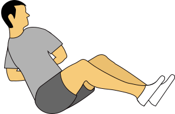
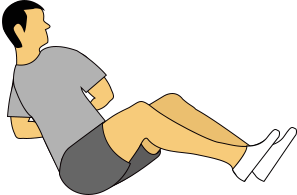
扭曲式
扭曲式：坐于地板上，双腿合拢成仰卧起坐姿势，双臂抬起，食指相扣，从身体的一侧摆动到另一侧，通过这种摆动来锻炼你的腹部肌肉。


踏凳
踏凳：将一只脚放在椅子上，抬起身体离开地面将重量转移到椅子上，这个项目主要锻炼腿部和臀部。


弓步提膝-左
弓步提膝-左：自然站立，左腿向后退一个弓步，下压，然后前脚用力将身体向上推，并将左腿膝盖向向前胸前抬起，返回到弓步姿势，并重复此组动作。


原地提膝踏步
原地提膝踏步：向上弯曲腿部，知道膝盖与地面成90度，然后腿放回，左右腿交替进行。

左侧身撑体
左侧身撑体：侧身躺下，前臂弯曲与地面垂直，保持身体从头到脚在一条直线上，这项运动的目的主要是锻炼斜腹肌。
.png)
右侧身撑体
右侧身撑体：侧身躺下，前臂弯曲与地面垂直，保持身体从头到脚在一条直线上，这项运动的目的主要是锻炼斜腹肌。


双臂交叉紧缩
双臂交叉紧缩式：交叉双臂并放置胸前，尽量弯曲肩膀去接近盆骨位置，这个项目主要锻炼腹直肌和腹斜肌。
 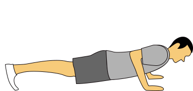
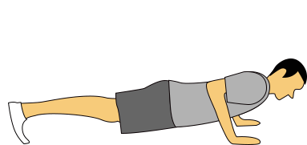
俯卧撑
俯卧撑：双手略宽于肩，双脚并拢，挺胸收紧腰腹部，然后屈肘让重心下降至胸部快贴近地面1厘米的位置，稍停，再集中胸大肌的力量快速推起。这种一般俯卧撑，主要锻炼胸大肌

蹲跳运动
蹲跳运动：身体以一个半蹲的姿势准备，接着借助腹部的力量跳起然后再蹲下，这是开始腹部运动的一个全面热身运动。


侧弓步
侧弓步：双脚并立，右腿向右侧跨一大步，尽量下压，保持左腿伸直。然后返回开始姿势，切换到左腿，重复此组动作。
 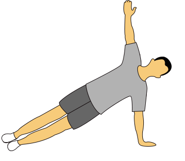
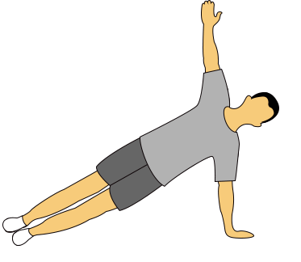
 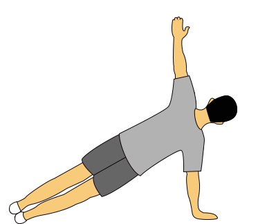
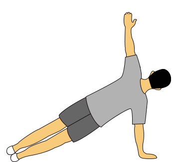
俯卧撑后转身
俯卧撑后转身：保持一个俯卧撑的姿势，旋转上半身，当你起身时同时伸展手臂，然后恢复到初始动作，换另一侧，两侧交替进行。
 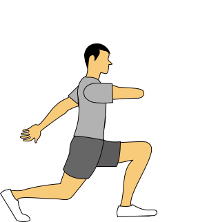
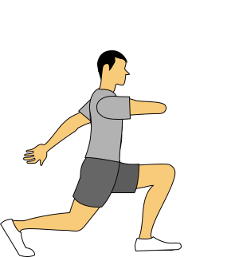

弓步提膝-右
弓步提膝-右：自然站立，右腿向后退一个弓步，下压，然后前脚用力将身体向上推，并将右腿膝盖向向前胸前抬起，返回到弓步姿势，并重复此组动作。
原地提膝踏步
原地提膝踏步：向上弯曲腿部，知道膝盖与地面成90度，然后腿放回，左右腿交替进行。
.png)
平板支撑
平板支撑：保持一个俯卧撑的姿势，前臂弯曲垂直于地面，使身体的重量落在前臂，肘部和脚尖接触地面，这组动作的目的主要是锻练腹部、背部、肩部的肌肉。
桥式
桥式：平躺，抬起你的臀部并保持背部挺直，可以锻炼整个腹部区域，下背部和臀部的肌肉。
左腿前蹲
左腿前蹲：左腿向前迈一大步，上身保持正直，然后尽量下压臀部，重复此组动作。
单腿俯卧撑
单腿俯卧撑：从一个标准的俯卧撑姿势开始，然后抬起一条腿，利用手臂的力量开始做俯卧撑，身体主要保持成一条直线的状态。


右腿前蹲
右腿前蹲：右腿向前迈一大步，上身保持正直，然后尽量下压臀部，重复此组动作。
弓步提膝-左
弓步提膝-左：自然站立，左腿向后退一个弓步，下压，然后前脚用力将身体向上推，并将左腿膝盖向向前胸前抬起，返回到弓步姿势，并重复此组动作。
弓步提膝-右
弓步提膝-右：自然站立，右腿向后退一个弓步，下压，然后前脚用力将身体向上推，并将右腿膝盖向向前胸前抬起，返回到弓步姿势，并重复此组动作。


 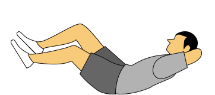
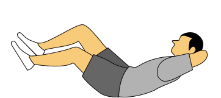
自行车紧缩式
自行车紧缩式：平躺，用双手抱着你的头，抬起你的膝盖，做蹬自行车的动作，身体来回扭动并使你的手肘触碰到你的膝盖。


单腿桥式
单腿桥式：平躺，一只脚抬起绷直，另一只脚尽弯曲垂直于地面，然后尽可能高的抬起你的臀部，收缩臀部和腿部肌肉，保持这个姿势。


波比
波比：首先身体站直，接着下蹲并双手着地，同时伸直你的胳膊和手臂，再快速返回下蹲姿势，之后跳起。这组动作是锻炼力量和有氧运动结合的全身锻炼项目。


手臂上举
手臂上举：身体自然站立，双臂垂于身体两侧，将双臂向上举过头顶，然后恢复到起始动作。


推墙式俯卧撑
推墙式俯卧撑：面对墙壁站立，与墙壁保持一大步的距离，然后身体向前倾，将双手垂直按与墙上，弯曲肘部，上身尽量靠近墙壁，然后推回，并重复这一动作，注意身体要保持成一条直线的状态。


弓步
弓步：一条腿向前跨步屈膝，身体随之下蹲，另一只脚在后面顺势弯曲，弓步能够增强股四头肌、臀大肌和奈绳肌


手臂环绕
手臂环绕：身体站直，双臂平伸于身体两侧，与肩同高，然后胳膊进行环绕活动，之后反方向环绕。


 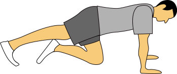
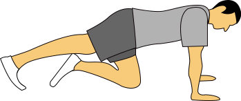
俯撑爬山
俯撑爬山：保持俯卧撑的姿势，用一只膝盖去触碰胸部，另一条腿不动，两腿交替进行。
脚高位俯卧撑
脚高位俯卧撑：从一个标准的俯卧撑姿势开始，但是将双脚支撑在一个椅子或长凳上。然后利用手臂的力量开始做俯卧撑，身体主要保持成一条直线的状态。

鸟犬式
鸟犬式：保持如图的开始姿势，然后伸直你的右腿并同时伸直你的左臂，使你的臀部和肩膀保持平行，确保你的后背挺直，这组动作的目的主要是锻炼腹部、腰部、臀部和大腿的肌肉。


屈膝弓步
屈膝弓步：身体直立，两脚间稍微打开一些距离，左腿退向后方并弯曲膝盖下压，然后恢复到初始动作换另一边重复此动作，两侧交替进行。